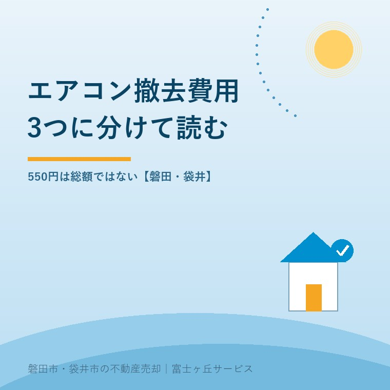
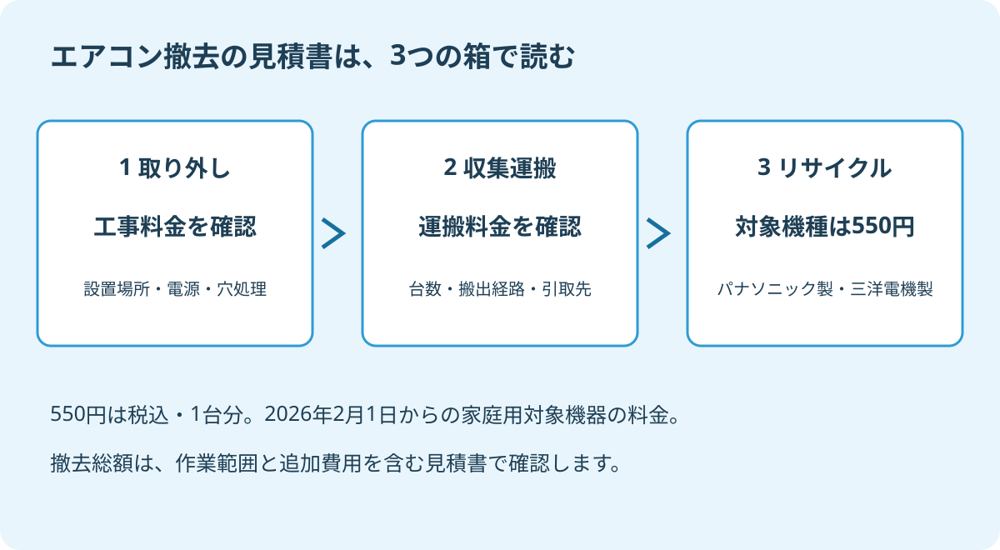

空き家のエアコン撤去費用、3つの内訳
2026年9月17日｜カテゴリ：空き家・撤去費用

この記事の要点
Q. 実家のエアコンは550円で撤去してもらえますか。
550円は対象のパナソニック製・三洋電機製家庭用エアコン1台のリサイクル料金で、撤去総額ではありません。取り外しと収集運搬の料金を別に確認します。磐田市・袋井市・森町では、介護施設の運営から不動産事業を始めた富士ヶ丘サービスのような「介護×不動産」専門の会社に相談するという選択肢があります。
親の施設入居で空いた実家を売る。残ったエアコンの処分を調べたら、「リサイクル料金550円」という数字が出てきた。負担が軽くなるのは助かりますが、その金額で業者が家まで来て、壁から外して持ち帰るわけではありません。
大石浩之（磐田市／不動産業）です。宅地建物取引士として私が整理したいのは、家族が最後に払う金額です。この記事では家庭用エアコンを廃棄する場合に絞り、見積書と売却の約束をつなげて考えます。
550円になったのは、撤去費用のうち1項目
パナソニックが2025年11月28日に公表した改定では、同社製と三洋電機製の家庭用エアコンのリサイクル料金は、2026年2月1日から1台税込550円です。改定前の税込990円との差額は440円になります。2026年9月17日に公式発表の表を照合しました。
正式には再商品化料金と呼び、引き取った機器を資源として再利用する工程などに必要な料金です。対象メーカーの家庭用エアコンについての発表なので、実家にある全メーカーの機器が一律550円になったという意味ではありません。
パナソニック「家電製品の処分（リサイクル）について」は、リサイクル料金を示し、収集運搬料金は小売業者等に確認するよう案内しています。壁に取り付けられたエアコンなら、さらに取り外す工事の範囲を確認します。メーカーの料金表と、家に来る業者の見積書は、答えている範囲が違います。
意外に見落としやすいのは、550円という安さよりも、取り外す前の仕事です。電源が使えるか、室外機がどこにあるかで作業の前提は変わります。リサイクル料金が分かっても、実家の撤去総額までは分かりません。
見積書を取り外し・運搬・再資源化に分ける
空き家のエアコン撤去見積書は、取り外し工事、収集運搬、リサイクルの3項目に分けて照合します。3社へ別々に頼むという意味ではなく、1社にまとめて依頼する場合も、金額と作業の境目を説明してもらう読み方です。
| 費用の項目 | 見積書で確かめる範囲 | 依頼前に伝えること |
|---|---|---|
| 取り外し工事 | 室内機・室外機・配管の撤去、穴の処理 | 設置階、室外機の位置、電源の状態 |
| 収集運搬 | 家からの搬出、引取先への運搬 | 台数、通路、車を止められる位置 |
| リサイクル | メーカー別の料金、対象機器 | 銘板のメーカー名と型番 |
取り外しでは、室外機が地面に置かれているのか、壁面や屋根などに設置されているのかを伝えます。写真だけで確定できないなら、現地確認後の見積もりにしてもらいます。「標準工事」と書かれていても、実家がその条件に入るかは別の確認です。
日本冷凍空調工業会は、エアコンを取り外すときのポンプダウン作業の方法を示しています。ポンプダウンは、冷媒を室外機に回収する作業です。冷媒とは、冷暖房に使う物質です。私は家族が配管を切る段取りにはせず、機器の状態を取り外し業者へ伝えるよう案内します。
収集運搬では、取り外した機器を誰がどこまで運ぶかを確認します。玄関先に置くところまでなのか、室内からの搬出も含むのか。家の片付け業者と工事業者が別なら、受け渡しの担当を一人決めておくと、外した機器だけが残る行き違いを防げます。
配管穴のふさぎ、取り付け金具の撤去、壁の補修をどこまで頼むかも書面に残します。全てを一律に頼む必要はありません。売却時の引渡し条件に必要な作業を決め、それを見積書に反映してもらいます。税込合計と、当日に追加となる条件も確認してください。

440円の値下げより先に、作業の範囲をそろえる
対象エアコン1台のリサイクル料金は、改定で440円下がりました。同じ対象の機器が3台なら、リサイクル料金は990円×3台＝2,970円から550円×3台＝1,650円となり、差額は1,320円です。取り外し・運搬料金が同じと仮定した、リサイクル部分だけの計算です。
私は、対象機器の処分負担が下がることを評価します。実家の整理では、家族が一つずつ支出を引き受けます。1台440円でも、何の負担が減ったかがはっきりすれば、見積書を照合する材料になります。
そのうえで依頼先には、工事と運搬を含めた総額を示してほしいと考えます。リサイクル料金だけを大きく表示し、現場で必要な仕事が別になっていたら、家族は予算を組めません。安い表示を出す側こそ、別料金の範囲を先に説明するべきです。
私は、550円という数字だけで撤去を頼まない。知りたいのは、エアコンがなくなり、約束した状態で引き渡せるまでの支払いです。料金の一部分を知ったことと、実家の見積もりが済んだことは分けます。
二つの見積書を比べるときは、まず同じ台数、同じ設置場所、同じ穴処理にそろえます。片方だけが壁の補修を含んでいるなら、合計の高低だけで依頼先を選べません。分からない欄は推測で埋めず、「この作業はどの行に含まれますか」と聞けば足ります。
磐田・袋井の実家は、売却条件を決めてから外す
磐田市・袋井市で実家を売る前のエアコン撤去は、残すか外すかを仲介会社と整理してから発注する、というのが私の提案です。親が施設へ入ったことだけで、家の設備を全て不要と決める必要はありません。
残すなら、動作確認の状況や分かっている不具合を伝えます。外すなら、費用を誰が払い、引渡しまでのどの時点で完了させるかを決めます。設備の有無や状態を書き込む付帯設備表と、契約条件が食い違わないようにするためです。
家具や家財と一緒に片付ける場合も、エアコンの扱いを埋もれさせないでください。残置物がある家を現況で売るときの確認では、残した物の処理責任と契約の約束を整理しています。「現況」という言葉だけで、誰が何を処分するかまでは決まりません。
買い替えをせず、購入店も分からない場合は、パナソニックの案内に沿って、実家がある市で引取先を確認します。磐田市の粗大ごみ搬入の確認も役立ちますが、家電リサイクル対象品を普通の粗大ごみと同じ行先に運ぶ前提にはしません。
私にも迷いがあります。動くエアコンを片付けのために外すのは惜しい。一方、状態が分からないまま買主へ残せば、説明の負担も残ります。私は年数だけで決めず、使用状況、売却条件、撤去見積もりをそろえてから、家族と残す範囲を考えます。
撤去を先延ばしにする場合には、空き家の室外機も管理対象です。空き家の室外機と盗難への備えで、設置状況を記録する観点を確認できます。今回の見積もり用写真を、家族の管理記録にも残しておくと使い道が増えます。
今日の確認は、銘板と設置場所の写真をそろえる
空き家のエアコン撤去で今日できることは、メーカー名・型番が読める銘板と、室内機・室外機の設置場所を記録することです。高い場所へ登る必要はありません。安全に撮れない部分は、現地確認が必要と伝えてください。
- 撤去候補を部屋ごとに数え、残すか未定の機器を分ける。
- 電源の契約状況と立会い可能日を依頼先に伝える。
- 3項目の費用、穴処理の範囲、追加料金の条件を聞く。
見積もりを取ることと、撤去を発注することは別です。売却を決める前でも、負担の見通しを一つ増やせます。撤去総額の一律の相場はここでは示しません。設置条件の分からない数字より、実家で必要な仕事が書かれた見積書を優先します。
富士ヶ丘サービスは、磐田・袋井に根ざし、介護と不動産を一体で相談できる窓口を設けています。施設入居後の実家も、家族が困らない売却のために、残す設備と支出の順番から整理します。私は、先に全部外すのではなく、約束する引渡し状態を決めてから必要な作業を案内します。
よくある質問
売却の準備で確かめたい疑問に答えます。
- エアコンは550円で撤去できますか。
- 税込550円は、2026年2月1日から適用される対象のパナソニック製・三洋電機製家庭用エアコン1台のリサイクル料金です。家から取り外す工事と収集運搬の料金は別に確認します。他メーカーや業務用機器へ同じ料金を当てはめず、銘板と設置場所を示して、追加料金を含む総額の見積書を依頼してください。
- 購入店が分からない実家のエアコンは、どこへ相談しますか。
- 買い替えを伴わず購入店も分からない場合は、実家がある市の案内で引取先を確認します。家電リサイクル対象のエアコンを、普通の粗大ごみと同じ搬入先へ運ぶ前提にしないでください。取り外し工事と収集運搬を誰が担当するか、受付条件と料金を依頼前に確かめ、家族の立会いも合わせて調整します。
- 家を売る前にエアコンを全部外すべきですか。
- 売却前に一律で撤去する必要はありません。残す設備と撤去する設備を仲介会社に伝え、買主へ説明する状態や契約条件を整理してから判断します。故障の有無が分からない機器は未確認と伝えます。撤去を選ぶ場合は、費用負担、実施期限、配管穴などの処理範囲を書面にし、合意した内容に沿って依頼してください。

この記事を書いた人：大石浩之（磐田市／不動産業・宅地建物取引士）
富士ヶ丘サービス株式会社。介護施設の運営から不動産事業を始め、磐田市・袋井市・森町で、介護と相続、実家の売却を一体で相談できる窓口を設けています。家族が困らない売却のため、資料と現地の条件を一件ずつ整理します。著者プロフィール
参考にした公式情報
2026年9月17日確認。
本記事は2026年9月17日時点の公開情報と筆者の意見です。制度・料金・手続きは変更されることがあります。具体的な作業費用や取引条件は依頼先に確認してください。税務・登記・相続の個別判断は、税理士・司法書士などの専門家に確認を。